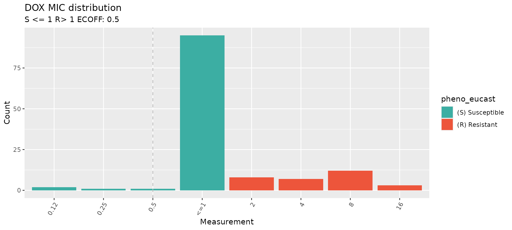
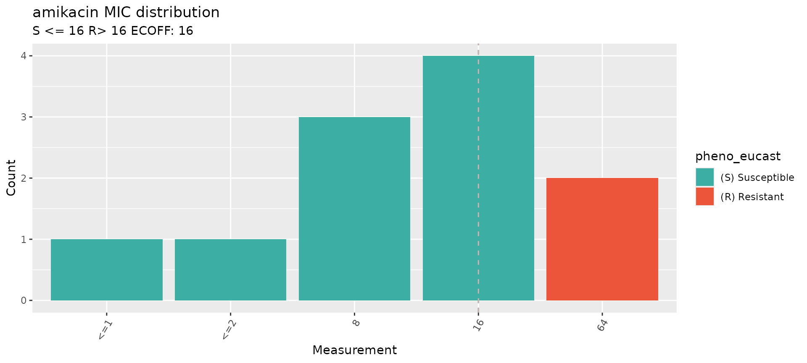
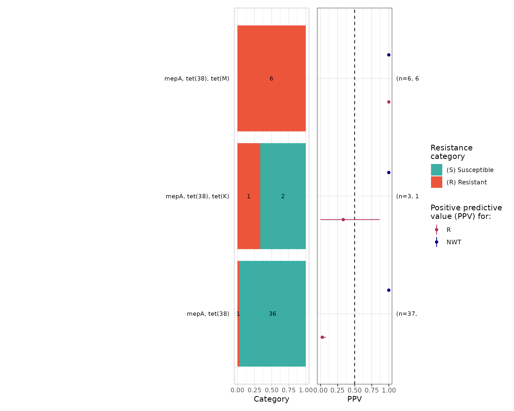

Introduction
This vignette demonstrates how to download antibiotic susceptibility testing (AST) data from NCBI and EBI, and to re-interpret it using different clinical breakpoints.
Start by loading the AMRgen package:
library(AMRgen)
library(dplyr)
#>
#> Attaching package: 'dplyr'
#> The following objects are masked from 'package:stats':
#>
#> filter, lag
#> The following objects are masked from 'package:base':
#>
#> intersect, setdiff, setequal, unionOption 1: Download data from NCBI
Option 1a: Download AST data from NCBI via rentrez
The download_ncbi_ast() function lets you download
antibiogram data from NCBI via their ‘EUtils’ API using the rentrez R
pacakge. You must specify a species, and can optionally limit the
download to one or more specific drugs. The function can also re-format
the data into an AMRgen phenotype table, and re-interpret phenotypes
against clinical breakpoints from EUCAST or CLSI.
This function is quite slow, especially for organisms with many BioSamples to search through, but it is free and requires no authentication to use. Alternatively, you may prefer to try the BigQuery functions below (Option 1b), which provide more efficient and complete access to NCBI data but require authentication via a Google Cloud account.
# Download Staphylococcus aureus AST data from NCBI, filtering for amikacin and doxycycline, and re-interpret with EUCAST breakpoints
staph_ast_ncbi <- download_ncbi_ast(
species = "Staphylococcus aureus",
antibiotic = c("amikacin", "DOX"), # antibiotics can be listed in short or long form
reformat = TRUE,
interpret_eucast = TRUE
) # reformat must be true to use interpret_* argument
# check how many samples retrieved
nrow(staph_ast_ncbi)
#> [1] 143
# check the output
head(staph_ast_ncbi)
#> # A tibble: 6 × 19
#> id drug_agent mic disk pheno_provided pheno_eucast guideline method
#> <chr> <ab> <mic> <dsk> <sir> <sir> <chr> <chr>
#> 1 SAMN47875… DOX <=1 NA S S CLSI broth…
#> 2 SAMN47875… DOX <=1 NA S S CLSI broth…
#> 3 SAMN38228… AMK <=2 NA S S CLSI broth…
#> 4 SAMN30333… AMK NA 21 S S CLSI disk …
#> 5 SAMN20982… AMK NA 23 S S CLSI disk …
#> 6 SAMN20982… AMK NA 22 S S CLSI disk …
#> # ℹ 11 more variables: platform <chr>, source <chr>, spp_pheno <mo>,
#> # `Resistance phenotype` <chr>, `Measurement sign` <chr>, Measurement <chr>,
#> # `Measurement units` <chr>, Vendor <chr>,
#> # `Laboratory typing method version or reagent` <chr>,
#> # pheno_eucast_mic <sir>, pheno_eucast_disk <sir>
# This is the same as downloading the data then re-interpreting it separately:
staph_ast_ncbi_raw <- download_ncbi_ast(
species = "Staphylococcus aureus",
antibiotic = c("amikacin", "DOX"),
reformat = FALSE,
interpret_eucast = FALSE
)
head(staph_ast_ncbi_raw)
#> # A tibble: 6 × 13
#> id BioProject organism Antibiotic `Resistance phenotype` `Measurement sign`
#> <chr> <chr> <chr> <chr> <chr> <chr>
#> 1 SAMN… PRJNA3915… Staphyl… doxycycli… susceptible <=
#> 2 SAMN… PRJNA3915… Staphyl… doxycycli… susceptible <=
#> 3 SAMN… PRJNA2788… Staphyl… amikacin susceptible <=
#> 4 SAMN… PRJNA7548… Staphyl… amikacin susceptible ==
#> 5 SAMN… PRJNA7548… Staphyl… amikacin susceptible ==
#> 6 SAMN… PRJNA7548… Staphyl… amikacin susceptible ==
#> # ℹ 7 more variables: Measurement <chr>, `Measurement units` <chr>,
#> # `Laboratory typing method` <chr>, `Laboratory typing platform` <chr>,
#> # Vendor <chr>, `Laboratory typing method version or reagent` <chr>,
#> # `Testing standard` <chr>
# Then reformat and re-interpret using EUCAST and CLSI breakpoints, and ECOFFs using the import_ncbi_biosample() function
staph_ast_ncbi2 <- import_ncbi_biosample(
input = staph_ast_ncbi_raw,
interpret_clsi = TRUE,
interpret_eucast = TRUE,
interpret_ecoff = TRUE
)
#> Parsing column organism as micro-organism (class 'mo')
#> Renaming column organism to standard name 'spp_pheno'
#> Parsing column Antibiotic as antibiotic (class 'ab')
#> Renaming column Antibiotic to standard name 'drug_agent'
#> Parsing column mic as class 'mic'
#> Parsing column disk as class 'disk'
#> Parsing column pheno_provided as class 'sir'
#> Renaming column Laboratory typing method to standard name 'method'
#> Renaming column Laboratory typing platform to standard name 'platform'
#> Renaming column Testing standard to standard name 'guideline'
#> Renaming column BioProject to standard name 'source'
#> Warning: There was 1 warning in `mutate()`.
#> ℹ In argument: `across(...)`.
#> Caused by warning:
#> ! Some MICs were converted to the nearest higher log2 level, following the
#> CLSI interpretation guideline.
head(staph_ast_ncbi2)
#> # A tibble: 6 × 25
#> id drug_agent mic disk pheno_provided pheno_eucast pheno_clsi ecoff
#> <chr> <ab> <mic> <dsk> <sir> <sir> <sir> <sir>
#> 1 SAMN47875… DOX <=1 NA S S S NI
#> 2 SAMN47875… DOX <=1 NA S S S NI
#> 3 SAMN38228… AMK <=2 NA S S NA WT
#> 4 SAMN30333… AMK NA 21 S S NA WT
#> 5 SAMN20982… AMK NA 23 S S NA WT
#> 6 SAMN20982… AMK NA 22 S S NA WT
#> # ℹ 17 more variables: guideline <chr>, method <chr>, platform <chr>,
#> # source <chr>, spp_pheno <mo>, `Resistance phenotype` <chr>,
#> # `Measurement sign` <chr>, Measurement <chr>, `Measurement units` <chr>,
#> # Vendor <chr>, `Laboratory typing method version or reagent` <chr>,
#> # pheno_eucast_mic <sir>, pheno_eucast_disk <sir>, pheno_clsi_mic <sir>,
#> # pheno_clsi_disk <sir>, ecoff_mic <sir>, ecoff_disk <sir>
# Note that when there is a mix of MIC and disk data, a separate _disk and _mic interpretation column, as well as an overall phenotype column, is produced for each interpretation.This produces a long format data frame, with one row per sample and drug combination. This is compatible with downstream functions in the AMRgen package.
Consider altering the max_records,
batch_size or sleep_time options if you want
to download a lot of data or run into NCBI server issues.
Option 1b: Download AST and genotype data from NCBI via bigrquery
NCBI data can be accessed via Google Cloud BigQuery. This requires a Google Cloud account. For more information about using BigQuery to explore NCBI Pathogen Detection data see https://www.ncbi.nlm.nih.gov/pathogens/docs/getting_started_bigquery/.
The query_ncbi_bq_ast() function lets you download
antibiogram data from NCBI via Google Cloud BigQuery using the bigrquery
R pacakge. You must specify a species, and can optionally limit the
download to one or more specific drugs. The function can also re-format
the data into an AMRgen phenotype table, and re-interpret phenotypes
against clinical breakpoints from EUCAST or CLSI.
This function is fast but requires authentication via a Google Cloud
account and may require payment. Free trial accounts can be set up,
but require credit card authorization. Google currently provides enough
free tier usage for >150 different queries for genotype data per
month. To use this you will also need to install the
bigrquery package and authorize it to use your Google cloud
account.
install.packages("bigrquery")
library(bigrquery)
bigrquery::bq_auth()To download AST data
# Download Staphylococcus aureus AST data from NCBI, filtering for amikacin and doxycycline
# NOTE: you may need to add 'PROJECT_ID="xxx"' to the command if you have not set up application default credentials
staph_ast_ncbi_cloud_raw <- query_ncbi_bq_ast(
taxgroup = "Staphylococcus aureus",
antibiotic = c("amikacin", "DOX")
)
# Import and reinterpret using CLSI breakpoints
staph_ast_ncbi_cloud <- import_ncbi_ast(staph_ast_ncbi_cloud_raw, interpret_clsi = TRUE)
#> Warning: There was 1 warning in `mutate()`.
#> ℹ In argument: `pheno_provided = as.sir(`Resistance phenotype`)`.
#> Caused by warning:
#> ! in `as.sir()`: 8 results in column 'pheno_provided' truncated (6%) that
#> were invalid antimicrobial interpretations: "intermediate"To download genotype data
The query_ncbi_bq_geno() function lets you download
AMRfinderplus genotype data, for BioSamples that have matching AST data,
from NCBI via Google Cloud BigQuery using the bigrquery R pacakge. You
must specify a species, and can optionally limit the download to one or
more specific drug classes (see NCBI AMR
Class-Subclass Reference for valid terms). The function can also
re-format the data into an AMRgen genotype table.
Note that to save memory and disk space BioSamples with no AST data in NCBI will not be included in the download.
Not all NCBI genotype results are updated with each new release of AMRfinderplus, so older genomes may have genotype results obtained with older versions of AMRfinderplus, and newer genomes will have genotype results obtained with more recent versions.
# Download Staphylococcus aureus genotype data from NCBI, filtering for variants associated with class 'AMINOGLYCOSIDES' or 'TETRACYCLINES'
# NOTE: you may need to add 'PROJECT_ID="xxx"' to the command if you have not set up application default credentials
staph_geno_ncbi_cloud_raw <- query_ncbi_bq_geno(
taxgroup = "Staphylococcus aureus",
geno_class = c("AMINOGLYCOSIDE", "TETRACYCLINE")
) %>% filter(biosample_acc %in% staph_ast_ncbi_cloud_raw$BioSample)
staph_geno_ncbi_cloud_raw
#> # A tibble: 119 × 9
#> biosample_acc `Gene symbol` Class Subclass `Element type` `Element subtype`
#> <chr> <chr> <chr> <chr> <chr> <chr>
#> 1 SAMN07291566 mepA TETR… TIGECYC… AMR AMR
#> 2 SAMN04901618 ant(9)-Ia AMIN… SPECTIN… AMR AMR
#> 3 SAMN04901605 mepA TETR… TIGECYC… AMR AMR
#> 4 SAMN04901606 mepA TETR… TIGECYC… AMR AMR
#> 5 SAMN07291567 aac(6')-Ie/aph… AMIN… AMIKACI… AMR AMR
#> 6 SAMN07291564 mepA TETR… TIGECYC… AMR AMR
#> 7 SAMN04901609 tet(M) TETR… TETRACY… AMR AMR
#> 8 SAMN07291562 mepA TETR… TIGECYC… AMR AMR
#> 9 SAMN04901615 mepA TETR… TIGECYC… AMR AMR
#> 10 SAMN30333622 ant(9)-Ia AMIN… SPECTIN… AMR AMR
#> # ℹ 109 more rows
#> # ℹ 3 more variables: Method <chr>, Hierarchy_node <chr>, scientific_name <chr>
# Import and parse results into AMRgen genotype table
staph_geno_ncbi_cloud <- import_amrfp(staph_geno_ncbi_cloud_raw, sample_col = "biosample_acc")
staph_geno_ncbi_cloud
#> # A tibble: 148 × 18
#> biosample_acc gene mutation drug_agent drug_class `variation type` node
#> <chr> <chr> <chr> <ab> <chr> <chr> <chr>
#> 1 SAMN07291566 mepA NA TGC Tetracycl… Gene presence d… mepA
#> 2 SAMN04901618 ant(9)-Ia NA SPT Other Gene presence d… ant(…
#> 3 SAMN04901605 mepA NA TGC Tetracycl… Gene presence d… mepA
#> 4 SAMN04901606 mepA NA TGC Tetracycl… Gene presence d… mepA
#> 5 SAMN07291567 aac(6')-… NA AMK Aminoglyc… Gene presence d… aac(…
#> 6 SAMN07291567 aac(6')-… NA GEN Aminoglyc… Gene presence d… aac(…
#> 7 SAMN07291567 aac(6')-… NA KAN Aminoglyc… Gene presence d… aac(…
#> 8 SAMN07291567 aac(6')-… NA TOB Aminoglyc… Gene presence d… aac(…
#> 9 SAMN07291564 mepA NA TGC Tetracycl… Gene presence d… mepA
#> 10 SAMN04901609 tet(M) NA NA Tetracycl… Gene presence d… tet(…
#> # ℹ 138 more rows
#> # ℹ 11 more variables: marker <chr>, marker.label <chr>, `Gene symbol` <chr>,
#> # Class <chr>, Subclass <chr>, `Element type` <chr>, `Element subtype` <chr>,
#> # Method <chr>, Hierarchy_node <chr>, scientific_name <chr>,
#> # subclass_to_parse <chr>Visualise the downloaded phenotype data to check the distribution of the AST data
# Select one antibiotic at a time
# Specify species and guideline, to annotate with EUCAST breakpoints
# Doxycycline
staph_dox_mic_plot <- assay_by_var(
pheno_table = staph_ast_ncbi,
antibiotic = c("DOX"),
measure = "mic",
colour_by = "pheno_eucast",
species = "Staphylococcus aureus",
guideline = "EUCAST 2024"
)
#> MIC breakpoints determined using AMR package: S <= 1 and R > 1
staph_dox_mic_plot
# Amikacin
staph_ami_mic_plot <- assay_by_var(
pheno_table = staph_ast_ncbi,
antibiotic = c("amikacin"),
measure = "mic",
colour_by = "pheno_eucast",
species = "Staphylococcus aureus",
guideline = "EUCAST 2024"
)
#> MIC breakpoints determined using AMR package: S <= 16 and R > 16
staph_ami_mic_plot
For more guidance on how to visulaise phenotypic data and combine it with genotypic data, have a look at the otherAMRgen vignettes.
Option 2: Download data from EBI
The download_ebi function lets you retrieve phenotype or
genotype data (by setting data ="genotype') from the EBI AMR Portal. Genotypes are
called using AMRfinderplus but processed by EBI. You can optionally
filter the downloaded file to a specified genus or species, and a
specific antibiotic (for phenotype data) or NCBI class/subclass (for
genotype data; check the NCBI AMR
Class-Subclass Reference for valid terms). The function can also
reformat and re-interpret the retrieved results with the breakpoint
standards of your choosing.
Note that while NCBI and EBI AST databases have a lot of overlapping content, they are not identical and each includes biosamples that the other does not.
# Download EBI phenotype data for all Staphylococcus, using the same example drugs as above. Reformat and re-interpret using EUCAST breakpoints
staph_ast_ebi <- download_ebi(
genus = "Staphylococcus",
antibiotic = c("amikacin", "DOX"),
reformat = TRUE,
interpret_eucast = TRUE,
interpret_clsi = TRUE,
interpret_ecoff = TRUE
) # chose which guideline to use for re-interpretation. reformat must be TRUE for re-interpretation
# check output
nrow(staph_ast_ebi)
#> [1] 218
length(unique(staph_ast_ebi$id))
#> [1] 190
head(staph_ast_ebi)
#> # A tibble: 6 × 46
#> id drug_agent mic disk pheno_provided pheno_eucast pheno_clsi ecoff
#> <chr> <ab> <mic> <dsk> <sir> <sir> <sir> <sir>
#> 1 SAMEA6982… AMK NA NA R NA NA NA
#> 2 SAMEA6985… AMK NA NA R NA NA NA
#> 3 SAMEA6982… AMK NA NA R NA NA NA
#> 4 SAMEA6984… AMK NA NA R NA NA NA
#> 5 SAMEA6984… AMK NA NA R NA NA NA
#> 6 SAMEA6986… AMK NA NA R NA NA NA
#> # ℹ 38 more variables: guideline <chr>, method <chr>, platform <chr>,
#> # source <chr>, spp_pheno <mo>, SRA_accession <chr>, assembly_ID <chr>,
#> # collection_year <int>, ISO_country_code <chr>, host <chr>, host_age <chr>,
#> # host_sex <chr>, isolate <chr>, isolation_source <chr>,
#> # isolation_source_category <chr>, isolation_latitude <chr>,
#> # isolation_longitude <chr>, genus <chr>, organism <chr>,
#> # Updated_phenotype_CLSI <chr>, Updated_phenotype_EUCAST <chr>, …Genotype data can be retrieved from EBI using the same function. Currently, not all samples in the EBI AMR portal have both AST and genotype data.
Note the input assemblies used to call genotypes, and the version of AMRfinderplus, in the EBI portal can be different from what’s available for download from NCBI using the above functions.
# Download genotype data for Staphylococcus, filter to markers associated with aminoglycosides or tetracyclines, and re-format the data into an AMRgen genotype table. Note that not all samples with phenotype data have genotype data.
staph_geno_ebi <- download_ebi(
data = "genotype",
genus = "Staphylococcus",
geno_class = c("AMINOGLYCOSIDE", "TETRACYCLINE"),
reformat = T
)
nrow(staph_geno_ebi)
#> [1] 45945
length(unique(staph_geno_ebi$BioSample_ID))
#> [1] 7547
head(staph_geno_ebi)
#> # A tibble: 6 × 34
#> BioSample_ID gene mutation node marker marker.label drug_agent drug_class
#> <chr> <chr> <chr> <chr> <chr> <chr> <ab> <chr>
#> 1 SAMEA5330271 tet(38) - tet(3… tet(3… tet(38) NA Tetracycl…
#> 2 SAMEA5330271 tet(K) - tet(K) tet(K) tet(K) NA Tetracycl…
#> 3 SAMEA5330271 mepA - mepA mepA mepA TGC Tetracycl…
#> 4 SAMEA5330297 tet(38) - tet(3… tet(3… tet(38) NA Tetracycl…
#> 5 SAMEA5330297 mepA - mepA mepA mepA TGC Tetracycl…
#> 6 SAMEA5330308 tet(K) - tet(K) tet(K) tet(K) NA Tetracycl…
#> # ℹ 26 more variables: assembly_ID <chr>, genus <chr>, species <chr>,
#> # organism <chr>, isolate <chr>, taxon_id <int>, region <chr>,
#> # region_start <int>, region_end <int>, strand <chr>, `_bin` <int>,
#> # id2 <chr>, gene_symbol <chr>, amr_element_symbol <chr>, element_type <chr>,
#> # element_subtype <chr>, class <chr>, subclass <chr>, split_subclass <chr>,
#> # antibiotic_name <chr>, antibiotic_ontology <chr>,
#> # antibiotic_ontology_link <chr>, evidence_accession <chr>, …Compare downloaded phenotypes and genotypes
The downloaded phenotype and genotype data for a specified antibiotic
can then be extracted and combined using the
get_binary_matrix function.
# first filter both EBI pheno and geno dataframes for Staph aureus only
# filter pheno data
staph_ast_ebi_filtered <- staph_ast_ebi %>%
filter(organism == "Staphylococcus aureus")
# filter geno data
staph_geno_ebi_filtered <- staph_geno_ebi %>%
filter(species == "Staphylococcus aureus")
# Make binary geno-pheno matrix for doxycycline phenotype (re-interpreted with EUCAST), and genotypes associated with the associated drug class (Tetracyclines)
tet_bin <- get_binary_matrix(
geno_table = staph_geno_ebi_filtered,
pheno_table = staph_ast_ebi_filtered,
antibiotic = "DOX",
drug_class_list = "Tetracyclines", # matches drug_class in geno_table
sir_col = "pheno_eucast", # phenotype column in pheno_table
keep_assay_values = TRUE,
keep_assay_values_from = "mic"
)
#> Some samples had multiple phenotype rows, taking the most resistant only for binary matrix
#> Defining NWT in binary matrix using ecoff column provided: ecoff
nrow(tet_bin)
#> [1] 116
head(tet_bin)
#> # A tibble: 6 × 11
#> id pheno ecoff mic R NWT mepA `tet(38)` `tet(K)` `tet(M)` `tet(L)`
#> <chr> <sir> <sir> <mic> <dbl> <dbl> <dbl> <dbl> <dbl> <dbl> <dbl>
#> 1 SAMN… S NI <=1 0 NA 1 1 0 0 0
#> 2 SAMN… S NI <=1 0 NA 1 1 0 0 0
#> 3 SAMN… S NI <=1 0 NA 1 1 0 0 0
#> 4 SAMN… S NI <=1 0 NA 1 1 1 0 0
#> 5 SAMN… R NWT 8 1 1 1 1 0 1 0
#> 6 SAMN… S NI <=1 0 NA 1 1 0 0 0
# plot positive predictive value for each marker/combination
tet_ppv <- ppv(tet_bin)
#> Removing 69 rows with no phenotype call
tet_ppv$plot
This produces a binary matrix with 1 row per BioSample, for all BioSamples that had both phenotype data for doxycycline instaph_ast_ebi_filtered AND any genotype data (associated
with any marker, not just Tetracyclines) in
staph_geno_ebi_filtered. This ensures that we include
samples for which genotyping was performed but returned no hits
associated with Tetracyclines, not just those samples that had
tetracycline associated markers detected (note that such samples would
be missing if we had only downloaded genotype data associated with
Tetracyclines).
Columns indicate the input phenotype columns for doxycycline (renamed
to standard fields pheno, ecoff,
mic), and binary indicators (1=present, 0=absent) for
doxycycline phenotypes (R, NWT) and each
genotype marker associated with tetracyclines (in this case
tet(38), tet(K),
tet(M),tet(L)).
For more examples on how to do join geno-pheno analyses and visualisations, so the other AMRgen Vignettes.